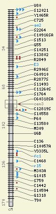
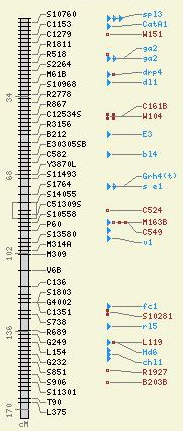
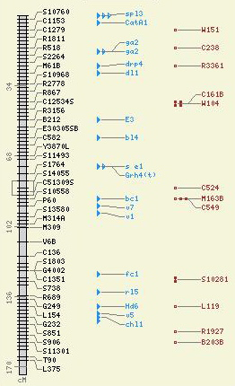
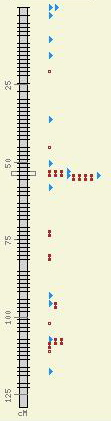
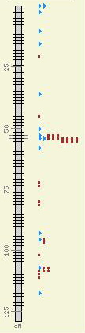

| By default, all the features for a map are drawn as closely to the map as possible. Here's an example of a rather dense map with all the features in the same lane (and at the same priority): | Here it is with the "lines" and "box" in the lane "1", and the rest in lane "2." | And here it is with the each feature type in it's own lane (with the exception of the "box," which shares the same lane as the "line." |
|  |  |  |
The idea of "lanes" is not absolute. Assigning a feature type to lane "5" does not mean that there will be empty lanes if features for lanes 2-4 are missing -- the missing lanes will simply be skipped. The numbers you assign to the "lane" value are used to group features into the same drawing area and to order which are drawn closer to the map.
| The "priority" value is used to determine how soon to drawn a feature within its assigned lane. Here the features are drawn at the same priority. Notice how they mix: | Here the features are drawn at the same priority. The blue triangles are given a higher priority than the brown dumbbells, causing them all to be drawn first. |
|  |  |